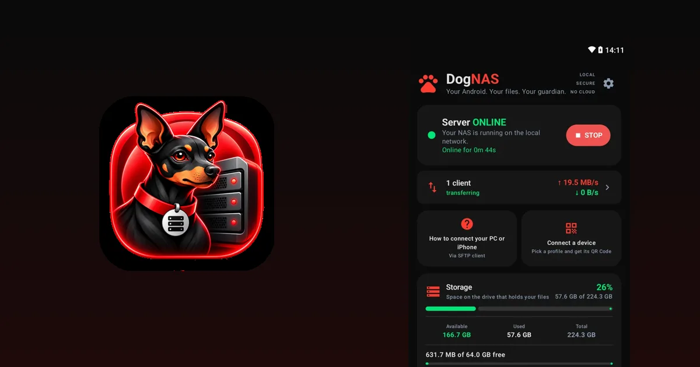
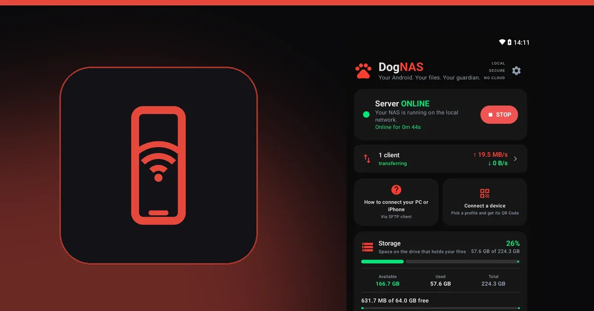
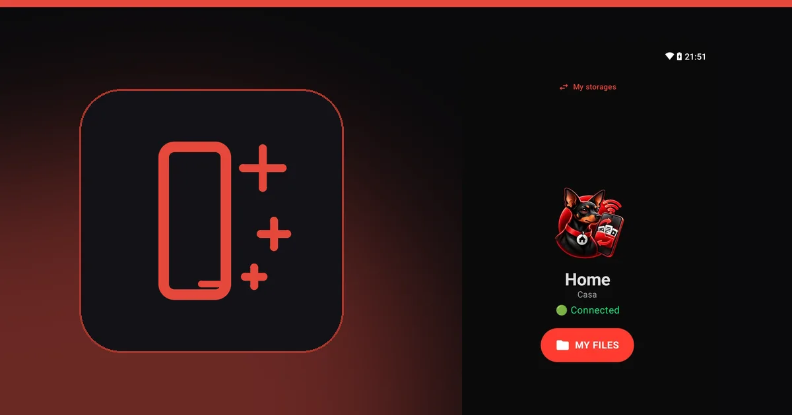
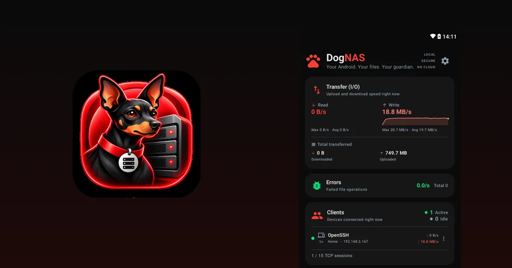
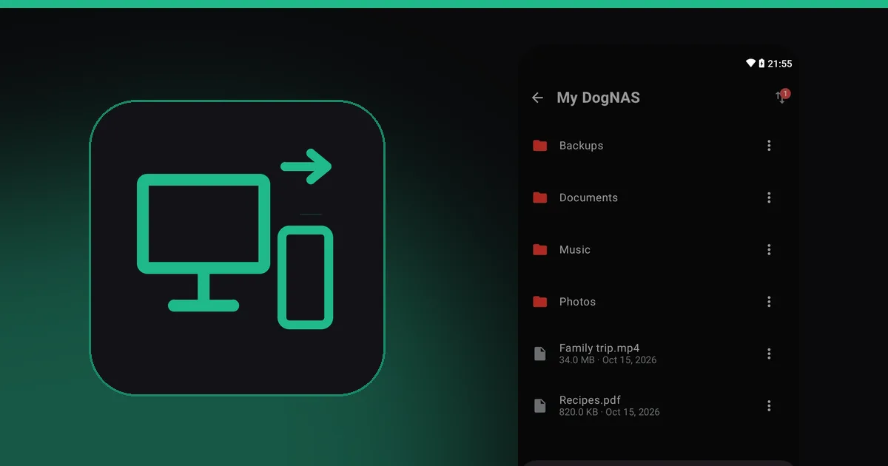
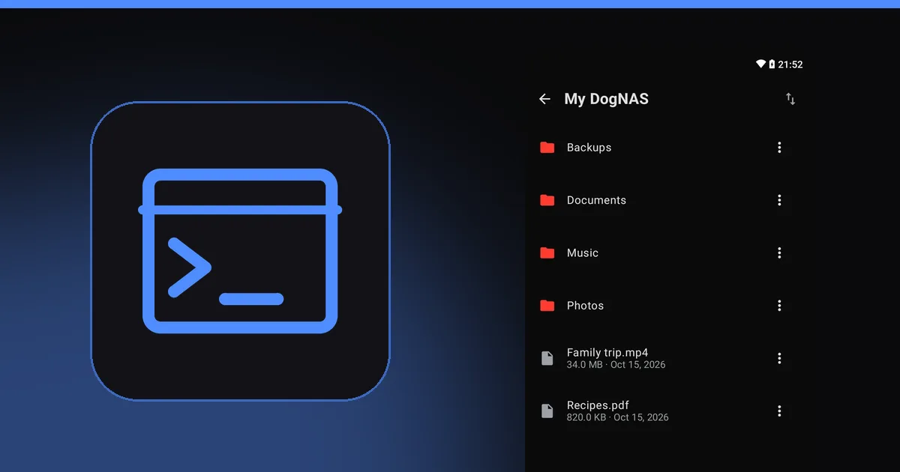
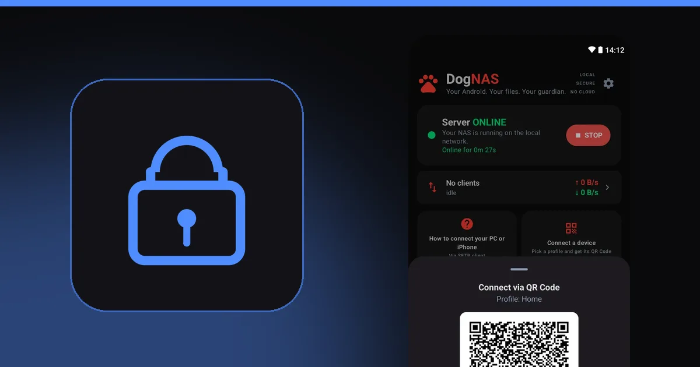

DogNAS Blog
Practical guides to use your Android as private storage, with no cloud.
 Guides
GuidesHow to save money on cloud storage subscriptions
Before paying for more cloud space, learn how to review what you use, clean out the rest and keep the bulk at home, with no monthly fee.
 Guides
GuidesHow to free up space on your Android phone without losing your photos
Clean out what is left over on Android and move photos and videos to a safe place off the phone, with no cloud subscription.
 Guides
GuidesA home NAS without buying a NAS: use the Android you already own
To keep your family's photos, videos and documents at home you don't always need to buy a NAS. See when an old Android is enough and when it isn't.

GuidesTraditional NAS or Android server: which to choose for your home
An honest comparison between a store-bought NAS and an old Android with DogNAS: what each does, what it costs and who it is for.

GuidesHow to turn an old Android into a file server
That phone or tablet sitting in a drawer can keep your home's photos, videos and documents over Wi-Fi, with no cloud and no monthly fee.
 Guides
GuidesHow to reuse an old laptop's hard drive as home storage
That hard drive or SSD left over from a laptop can become extra space for your Android server. See what you need and what to watch for.

GuidesWhat to do with an old Android phone: 10 ideas that are actually useful
Camera, webcam, media hub, file server and more: 10 uses for the Android sitting in a drawer, and how to pick the best one for you.

GuidesOld tablet sitting idle? Turn it into home storage
The Android tablet nobody uses anymore has a big screen, a generous battery and room to spare: great as your family's file server.

GuidesHow to transfer files between your PC and phone over Wi-Fi, no cable
Cable, cloud, apps or a server of your own at home: the ways to move files from PC to phone and back, and when each one is worth it.
 Guides
GuidesSell, donate or reuse your old phone: how to decide
Before selling or throwing away your old phone, compare the options and see how to erase your data safely.

GuidesHow to access DogNAS with FileZilla, WinSCP, Cyberduck and rclone
Step-by-step to connect your DogNAS server to four popular SFTP programs and choose the best one for how you work.

GuidesWhat is SFTP, and how to access a file server on Android
SFTP is a secure way to send and fetch files over a network. Learn what it is, what it is for and how to reach your DogNAS server from a PC and a phone.